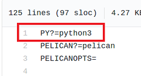
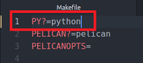

Full error:
$ cd /home/<user>/path_to_project_root/output && python3 -m pelican.server
$ /usr/bin/python3: Error while finding spec for 'pelican.server' (ImportError: No module named 'pelican')
$ Makefile:77: recipe for target 'serve' failed
$ make: *** [serve] Error 1
Description:
This error appears when trying to run make serve from the terminal in a virtualenv environment where python3 is not installed and Makefile is configured for use with python3.
I would assume installing a version of python3 in virtual environment may solve this but I haven’t tested this. I fixed this by changing line 1 in Makefile from PY?=python3 to PY?=python.
Before:

After:

Comments !